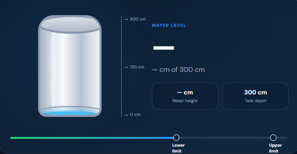
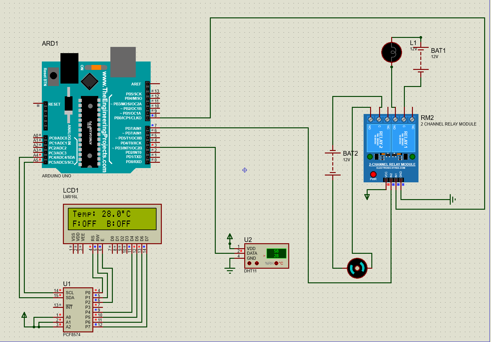
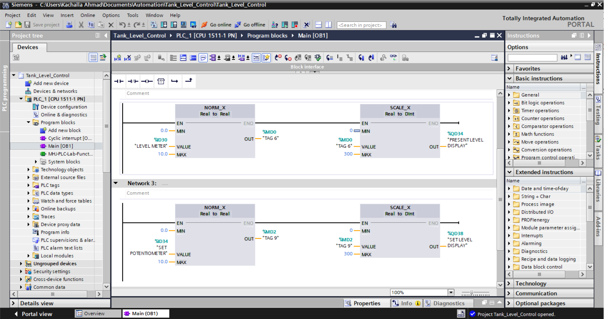

What I've built
Control, embedded, and IoT systems designed to solve real problems

An automated system that monitors water tank levels using a waterproof ultrasonic sensor and controls a relay-driven 12V DC pump through an ESP32 microcontroller. Safety-critical pump control runs locally on the ESP32, while a cloud backend and mobile/web dashboard provide real-time monitoring, alerts, and remote configuration, even when offline.

An IoT-based poultry house system that continuously monitors temperature and humidity to maintain a healthy environment for poultry. The system automatically controls ventilation and cooling equipment when temperature levels rise beyond the desired range, while providing real-time environmental data and alerts to help farmers maintain optimal conditions and improve poultry productivity.

A series of ladder-logic control programs designed and tested in Factory I/O, covering conveyor sequencing, sorting stations, and safety interlocks, aimed at strengthening practical PLC programming and industrial automation skills.